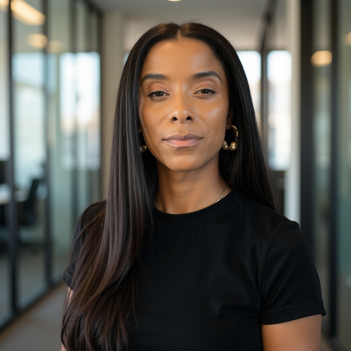

Technical leadership
& operations
Programs, platforms, and the work of coordinating product and engineering delivery. A focus on systems, partnerships, and scaling operations.
Compare notes ↗I build systems and lead complex technical programs. I research how intelligent technologies reshape human judgment, organizational authority, and accountability.
Take a look around ↓
My work sits where technical systems meet institutional decisions: how organizations coordinate, whose judgment carries weight, and who can act when something goes wrong.
Technical practice leader across enterprise security, resilience, intelligence, and software development. I learned how to lead from military operations in the U.S. Air Force, and how to deliver business value from two decades of work with companies including J.P. Morgan Chase, the London Stock Exchange, and The Estée Lauder Companies.
That experience informs The Architecture of Agency, a book and research program I’m developing on intelligence, technology, and institutional power. It also shapes my next chapter in formal study and private advisory work.
Programs, platforms, and the work of coordinating product and engineering delivery. A focus on systems, partnerships, and scaling operations.
Compare notes ↗A book in development examining how intelligent technologies redistribute professional judgment, expertise, authority, and responsibility.
Explore the project ↗An ongoing interest in frontier research, technology, culture, and the wider world. Source-led reading, with room to make your own connections.
Explore on Threads ↗In development
Historical scope: 1997–2027
Intelligence, Technology, and Institutional Power, 1997–2027
How do intelligent technologies redistribute judgment, authority, trust, and responsibility—and what institutional conditions preserve meaningful human agency?
From the networked organization to AI-assisted work, I’m examining how people’s capacity to understand, decide, challenge, and obtain review changes alongside the systems they use. The inquiry includes the ways technology can expand that capacity, and the conditions under which it can diminish it.
The book connects a historical record with organizational science and the design of institutions. Its fifteen chapters are organized in three parts.
The decision-maker. The team. The institution.
My proposed research program connects organizational behavior, social psychology, and cognition to the practical conditions of agency in intelligent organizations. These are research questions and planned methods; the studies are in development.
When do technical professionals accept, challenge, modify, or override AI recommendations? How do institutional endorsement, professional expertise, and usable override rights affect their decisions?
Controlled decision tasks, randomized scenarios, and behavioral measures of accuracy, evidence seeking, calibrated reliance, and meaningful challenge.
How does the introduction of autonomous agents change collaboration, coordination, team trust, and perceptions of expertise?
Longitudinal team surveys, interviews, and organizational network analysis around agent adoption, with attention to role clarity, advice seeking, professional discretion, and the distribution of work.
What happens when a person retains formal responsibility while relying on AI-generated analysis or recommendations? Who has practical control, and who is expected to answer for the result?
Scenario experiments and comparative organizational case studies examining decision rights, documentation, escalation, practical intervention, and responsibility attribution.
The research standard: separate claims from evidence, preserve competing interpretations, and distinguish historical records from findings of future studies.
Information systems. The business of engineering. Organizational science. Law.
My planned academic path develops the technical, behavioral, and legal tools to investigate how naturally occurring and engineered intelligence interact—and how institutions can protect human agency, diversity, and adaptive capacity.
B.S. Management Information Systems
Codify professional foundation in computing, systems analysis, statistics, and research methods.
MBA + MEng
Targeted graduate study connecting organizational decision-making and strategy with engineering, technical validation, and intelligent systems.
PhD in Management · Organization Studies
Intended doctoral study in organizational behavior, social psychology, trust, authority, and institutional accountability.
JD
Intended legal study connecting empirical research with institutional duties, rights of review, and enforceable protections for human agency.
Private global advisory
2030
Help organizations make consequential decisions with clear authority, usable evidence, and accountability that matches the power to act.
The planned practice brings operational experience into dialogue with an evolving research program, translating tested findings as they become available.
Review how people access evidence, exercise professional judgment, challenge recommendations, and intervene in AI-assisted decisions.
Examine team roles, coordination, advice seeking, professional discretion, and the changes that accompany agent adoption.
Map who designs, deploys, approves, monitors, and answers for decisions—and whether responsibility is supported by practical authority and usable records.
Examine whose expertise is recognized, whose evidence is heard, and whether opportunities to question, correct, and appeal work across roles and groups.
Independent scholarship, technical research, books, and journals. I’m interested in what people are studying and building before it becomes familiar.
Theater, museums, independent music, vintage shops, and a good meal.
The Adirondacks: hiking, birding, lakes, and astronomy.
Practical design, durable materials, and good construction.
Human agency, the political economy of technology, and the institutions we build around both.
My current writing explores the changing nature of expertise, the commercialization of knowledge, technology governance, and the relationship between public life and private power. The Architecture of Agency provides a longer frame for these questions.
Through Seventy Nine Ventures, I also follow frontier research, science, culture, and international affairs—starting with primary sources and keeping fact and interpretation distinct.
Follow Seventy Nine Ventures ↗Connect with me about technical leadership, research collaboration, writing, or the institutional questions raised by intelligent systems.